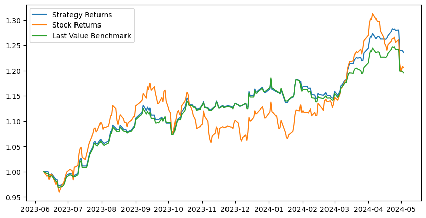

We applied machine learning methods to predict daily stock price movements in a basket of 10 US-listed energy companies. We found the most success using an LSTM model, achieving an accuracy of up to 61% on one stock (PSX). In line with prior literature, we compared our results to a benchmark established by a last value machine, which simply predicts the next day’s price to be the current day’s actual price. We tested our model on two different sets of observations, first on a year’s worth of historical data (historical test) and then on one week of recent trading data (live test). Comparing our LSTM results to our benchmark, we find mixed results. We achieve, on average, 53.57% accuracy vs. our benchmark’s 53.08% accuracy on the historical test. For the ten companies in our analysis, our model has superior for accuracy for 6 companies, has equal accuracy for 1 company, and has worse accuracy for 3 companies compared to our last value benchmark. This superior accuracy leads to higher simulated portfolio returns using our model compared to our benchmarks. Our live test accuracy of 49.99% was worse but still beat our benchmark’s accuracy of 48.33%.
Introduction
In this blog post, we train machine learning models on historical stock market data to predict future stock price movements. This is a highly popular problem to address because of the potential for significant monetary gain. This is an important problem societally because stock markets are mechanisms of price discovery: they answer the question “What is a company worth?” Finding the right answer to that question allows society to correctly allocate more or less capital (money) to that company. On an individual level, this is an important problem to us as the authors because it’s the problem for all quant trading: making a profitable model.
An enormous body of literature within and without computer science exists for stock market prediction. Among the papers most relevant to our work are Gunduz (2021), Bhandari et al. (2022), and Zhang (2022).
Gunduz (2021) applies LSTM and ensemble learning (Light-GBM) models to predict the hourly directions of eight banking stocks in Borsa Istanbul. He achieved up to maximum success rate of 0.685 using individual features of bank stocks and LSTM.
Bhandari et al. (2022) apply single-layer and multi-layer LSTM models to the problem of predicting the S&P 500, the index of the largest 500 publicly traded companies in America. Their single-layer LTSM model with 150 neurons is their best performing specification. Their set of predicted values have an average correlation coefficient of 0.9976 with actual S&P index values.
Zhang (2022) finds the LSTM network model does not perform better than other models when applied to a short forecasting horizon (1 to 10 days). Zhang’s “other models” are linear regression, eXtreme gradient boosting (XGBoost), last value, and moving average.
We take some of the “best practices” we observe in the above papers, specifically benchmarking with last value and using MSE and R to assess our results. Unlike the mentioned papers, we will be focusing on single stocks and attempting to build a model that outperforms the last value benchmark.
Values
The potential users are anyone interested in making profitable trades in the stock market. They are the individuals most likely to directly benefit from our work. Nonusers who could be affected by our work are those engaged in the stock market. The obvious affected nonusers are those on the opposite side of each trade as a user. In every trade, there’s a buyer and a seller, so in every trade, there’s a winner and a loser. These opposing nonusers are the individuals who are most likely to be harmed by the success of our program.
Ultimately, the point of the back and forth of markets is price discovery: to help society find the right prices of different companies. This leads to another nonuser effect: with better price discovery and more efficient markets, companies will raise money at prices that are closer to some “true” value, which is loosely defined as a value that best reflects the fundamental valuation of the company. Our model does not attempt to predict a true fundamental value for a company, but by making accurate predictions for the next day’s price, it should accelerate the market’s convergence to an appropriate value.
A useful financial trading model should lead to a net societal benefit because better financial markets mean more or less money going to companies and therefore projects, leading to something closer to an “optimal” allocation of money in society.
We are personally motivated to work on this project because of personal interest, professional relevance, and the difficulty of the problem. All three of us personally invest in the stock market. Two of us (Donovan & James) are double majors in economics and have had experience working in the financial services industry. Andre is interested in pursuing a master’s in financial engineering after Middlebury. The problem itself is also inherently challenging: financial markets are constantly adapting and changing, making the findings of previous literature increasingly likely over time to be less applicable to today’s markets. This forces us to adopt new techniques. # Materials and Methods
Our Data
Our data was sourced from Yahoo Finance. We used the yfinance library to download historical stock price data for our 10 different stocks. We chose to focus on US-based oil companies. These companies are Exxon Mobil (XOM), Chevron (CVX), ConocoPhillips (COP), Enterprise Products Partners (EPD), Pioneer Natural Resources (PXD), EOG Resources (EOG), Duke Energy (DUK), Marathon Petroleum (MPC), Schlumberger (SLB), and Phillips 66 (PSX). We downloaded the data from May 6th, 2014 to May 6th, 2024.
Within the yfinance dataset we were given the following columns: Open, High, Low, Close, Adj Close, Volume.
Open is the opening price of the stock for the day. High is the highest price of the stock for the day. Low is the lowest price of the stock for the day. Close is the closing price of the stock for the day. Adj Close is the adjusted closing price of the stock for the day. Volume is the number of shares traded for the day.
We used the Close column as our target variable for our model. We also created the following features: SMA_20, SMA_50, Std_Dev, Z_Score, RSI, TTM_P/E which will be discussed below. Here’s a look at what the raw data looks like:
import yfinance as yfxom = yf.Ticker('XOM')data = xom.history(start='2014-05-06', end='2024-05-07')data.head()
Open
High
Low
Close
Volume
Dividends
Stock Splits
Date
2014-05-06 00:00:00-04:00
66.050586
66.501227
65.928274
66.095650
9669800
0.00
0.0
2014-05-07 00:00:00-04:00
66.385376
66.597816
66.172931
66.378937
11007400
0.00
0.0
2014-05-08 00:00:00-04:00
66.366038
66.494794
65.773772
65.870338
8922500
0.00
0.0
2014-05-09 00:00:00-04:00
65.922184
66.226810
65.630524
66.077736
8948800
0.69
0.0
2014-05-12 00:00:00-04:00
66.324029
66.336990
65.805516
66.259216
8830500
0.00
0.0
You can find the full implementation of our data at lstm_data.py under the function prepare_data().
Our Approach
Features of Our Data & Target Variable
We used SMA_20, SMA_50, Std_Dev, Z_Score, RSI, Close, TTM_P/E as predictors for our models.
The SMA_20 and SMA_50 are the 20-day and 50-day simple moving averages of the stock price. This means that the average closing price of the stock over the last 20 and 50 days, respectively.
The Std_Dev is the standard deviation of the stock price meaning how much the stock price deviates from the mean.
The Z_Score is the z-score of the stock price meaning how many standard deviations the stock price is from the mean.
The RSI is the relative strength index of the stock price meaning how strong the stock price is relative to its past performance. It is calculated by taking the average of the gains and losses over a certain period of time.
The Close is the closing price of the stock per day.
The TTM_P/E is the trailing twelve months price-to-earnings ratio of the stock.
We used the next day’s Close price as the target variable for our model.
Data Manipulation
We collected 10 years of data from May 7th, 2014 to May 7th, 2024 and used a train-test split of 90-10 in order to train our model on the first 9 years worth of the data and test it on the remaining 1 year’s worth of data. We used a standard scaler for scaling our data in order to ensure that the data was normalized. We fit the scaler on the training data and then applied it to the test data to avoid any information leaking. We then combined the training data for each stock into one dataset. We used the closing price of the stock as the target variable for our model.
Here’s what our data looks like after creating our features and scaling the data:
The autoreload extension is already loaded. To reload it, use:
%reload_ext autoreload
tickers = ['XOM', 'CVX', 'COP', 'EPD', 'EOG', 'DUK', 'MPC', 'SLB', 'PSX', 'OXY']start ='2014-05-06'end ='2024-05-07'# preps data, see lstm_data.py, prints size of each ticker's datasetX_train, y_train, X_test, y_test, X_scalers, y_scalers, batch_size = prepare_data(tickers, start_date=start, end_date=end, test_size=0.1)X_train
Originally, we used rather simplistic models like logistic regression, Random Forest, and SVM in order to predict stock price movements. We utilized Recursive Feature Elimination (RFE) in order to determine the optimal features for prediction for each model. However, we found that these models were not able to predict stock price movements consistently with much accuracy. We then decided to use a Long Short-Term Memory (LSTM) model to predict stock price movements. LSTM models are a type of recurrent neural network (RNN) with the addition of “gates” notably the input, forget and output gates. These gates allow for the model to determine what information to retain or discard at each timestep, mitigating the vanishing descent issue found in traditional recurrent neural networks. The LSTM model accounts for the shortfalls of an RNN by capturing long-term dependencies in the data.
The forget gate determines which information is either retained or discarded at each time step. It accepts the output from the previous time step \(h_{t-1}\) and the input \(x_t\) at the current time step. The forget gate is defined as:
\[f_t = \sigma(W_f \cdot [h_{t-1}, x_t] + b_f)\]
The input gate determines which information is stored in the cell state. It avoids feeding the unimportant information into the current memory cell. It has three different components:
Getting the state of the cell that must be updated.
This output information is firstly determined by a sigmoid layer, then the newly created cell state is processed by a tanh layer. The output is then multiplied by the sigmoid layer to determine the final output of the LSTM cell.
Which is defined as:
\[h_{t} = o_{t} \ast \tanh(C_{t})\]
Taking this all into account, the LSTM model is able to retain information from previous time steps and use it to predict future stock price movements while disregarding irrelevant information.
The implementation of our LSTM model can be found at: lstm_model.py
Training Our Models
We first converted our wanted feature columns into a torchVariable to allow them to be differentiable. Then, we reshaped the data using torch.reshape() and torch.utils.data.DataLoader into [batch_size, seq_len, input_size].
features = ['SMA_20', 'SMA_50', 'Std_Dev', 'Z_Score', 'RSI', 'Close', 'TTM_P/E']X_train_tensors = Variable(torch.Tensor(np.array(X_train[features])))y_train_tensors = Variable(torch.Tensor(y_train.values))X_train_final = torch.reshape(X_train_tensors, (X_train_tensors.shape[0], 1, X_train_tensors.shape[1]))# split data by tickerdata_loader_train = torch.utils.data.DataLoader( torch.utils.data.TensorDataset(X_train_final, y_train_tensors), batch_size=batch_size, shuffle=True)next(iter(data_loader_train))[0].shape
torch.Size([2041, 1, 7])
We trained our model using our own personal devices. We used the Adam optimizer with a learning rate of 0.001. We trained the model for 1000 epochs for each stock in our dataset (10 total) and used the torch.nn.MSELoss() loss function to train the model.
Where \(y_{i}\) is the true price and \(\hat{y}_{i}\) is the predicted price.
As mentioned previously our model was trained on 90% of the data and tested on the remaining 10%.
If the model predicted the next days price to be positive, we would purchase the stock at the closing price and sell it at the closing price the next day. If the model predicted the next days price to be negative, we would short the stock at the closing price and buy it back at the closing price the next day. We would then calculate the profit or loss percent change for each stock and compare it to the last value benchmark.
Below is our training code:
num_epochs =1000# 1000 epochslearning_rate =0.001# 0.001 lrinput_size = X_train_final.shape[2] # number of featureshidden_size =32# number of features in hidden statenum_layers =1# number of stacked lstm layerswindow =1# number of windows, leave at 1, basically can ignorenum_classes =1# number of output classeslstm = LSTMModel(num_classes, input_size, hidden_size, num_layers, seq_length=window, batch_size=batch_size) #our lstm class criterion = torch.nn.MSELoss() # mean-squared error for regressionoptimizer = torch.optim.Adam(lstm.parameters(), lr=learning_rate) # ADAM optimizer# training loopfor epoch inrange(num_epochs):for i, data inenumerate(data_loader_train): X_, y_ = data outputs = lstm.forward(X_) #forward pass optimizer.zero_grad() #calculate the gradient, manually setting to 0# obtain the loss function loss = criterion(outputs, y_.reshape(y_.size(0)*y_.size(1), 1)) loss.backward() #calculates the loss of the loss function optimizer.step() #improve from loss, i.e backprop# if (i + 1) % 50 == 0:# print(f"Epoch {epoch}, batch {i:>3}, loss on batch: {loss.item():.3f}")if epoch %100==0:print("Epoch: %d, loss: %1.5f"% (epoch, loss.item()))
We evaluated our model by comparing the cumulative predicted stock price returns and accuracy to the actual cumulative stock price returns and accuracy and the cumulative last value benchmark returns and accuracy. The last value benchmark is defined as using the previous days value as the prediction for the current day. We would buy the stock at the current day’s close price and sell at the next day’s close price if the predicted returns were positive and do nothing if the predicted returns were negative. We followed the same principle in calculating actual cumulative stock returns and accuracy, and the cumulative last value benchmark returns and accuracy.
We define accuracy for our purposes as percentage of times the model correctly predicts an upward or downward movement in the share price of a company.
Consider a simple test case where the model predicts the stock price to go up and the stock price actually goes up. In this case, the model is correct. If the model predicts the stock price to go up and the stock price actually goes down, the model is incorrect. We calculate the accuracy of the model by dividing the number of correct predictions by the total number of predictions.
XOM Accuracy: 0.5418502202643172, Correlation: 0.972313389714224, Last Value Accuracy: 0.5242290748898678, Last Value Correlation: 0.9780145037734742
CVX Accuracy: 0.5154185022026432, Correlation: 0.9613024878319475, Last Value Accuracy: 0.5066079295154186, Last Value Correlation: 0.9635678490020599
COP Accuracy: 0.5550660792951542, Correlation: 0.9689221084107935, Last Value Accuracy: 0.5418502202643172, Last Value Correlation: 0.9783667790929887
EPD Accuracy: 0.5374449339207048, Correlation: 0.9860702298831613, Last Value Accuracy: 0.5506607929515418, Last Value Correlation: 0.9916250412456891
EOG Accuracy: 0.5506607929515418, Correlation: 0.9686894982563453, Last Value Accuracy: 0.5462555066079295, Last Value Correlation: 0.9721381776147026
DUK Accuracy: 0.4933920704845815, Correlation: 0.9693304786167968, Last Value Accuracy: 0.4889867841409692, Last Value Correlation: 0.9698313657418474
MPC Accuracy: 0.5770925110132159, Correlation: 0.9716364908547462, Last Value Accuracy: 0.5550660792951542, Last Value Correlation: 0.9941712442141354
SLB Accuracy: 0.4669603524229075, Correlation: 0.9745432552946375, Last Value Accuracy: 0.4669603524229075, Last Value Correlation: 0.9752418496648181
PSX Accuracy: 0.6079295154185022, Correlation: 0.9801502512089683, Last Value Accuracy: 0.6123348017621145, Last Value Correlation: 0.995576915466044
OXY Accuracy: 0.5110132158590308, Correlation: 0.9636470842152328, Last Value Accuracy: 0.5154185022026432, Last Value Correlation: 0.9638295520210561
Average Accuracy
Below shows the overall accuracy, summed across our 10 stocks, vs the Last Value Benchmark.
We find that the average accuracy of our model slightly outperforms the last value benchmark, but our correlation slighty underperforms the last value benchmark.
1 Year Portfolio Returns: 1.2360575366734956
1 Year Stock Returns: 1.2066049840833908
1 Year LV Returns: 1.195690607517653

Figure 1: A comparison of cumulative returns between our strategy returns, baseline stock returns, and the last value benchmark.
Live Mock Testing
For fun, we decided to do a live mock test for the past week (2024/05/07 - 2024/05/16) to see how are model does on current data. We followed the same procedures as above except we trained on 10 years of data prior to our test week.
XOM Accuracy: 0.5, Correlation: 0.45596059959860424, Last Value Accuracy: 0.3333333333333333, Last Value Correlation: 0.442960265038012
CVX Accuracy: 0.6666666666666666, Correlation: 0.33422337988058554, Last Value Accuracy: 0.5, Last Value Correlation: 0.34341958688787927
COP Accuracy: 0.6666666666666666, Correlation: 0.7971408777137727, Last Value Accuracy: 0.6666666666666666, Last Value Correlation: 0.7558464387577114
EPD Accuracy: 0.3333333333333333, Correlation: 0.8684150010738954, Last Value Accuracy: 0.3333333333333333, Last Value Correlation: 0.8603779889931645
EOG Accuracy: 0.3333333333333333, Correlation: 0.2363276728915621, Last Value Accuracy: 0.3333333333333333, Last Value Correlation: 0.25582456053077646
DUK Accuracy: 0.3333333333333333, Correlation: -0.09651392314802673, Last Value Accuracy: 0.5, Last Value Correlation: -0.159262707461855
MPC Accuracy: 0.6666666666666666, Correlation: 0.7663651315254851, Last Value Accuracy: 0.6666666666666666, Last Value Correlation: 0.7016596578784171
SLB Accuracy: 0.5, Correlation: 0.42526094830678546, Last Value Accuracy: 0.5, Last Value Correlation: 0.44817487130500694
PSX Accuracy: 0.6666666666666666, Correlation: 0.19340309591226992, Last Value Accuracy: 0.8333333333333334, Last Value Correlation: 0.27552121319099077
OXY Accuracy: 0.3333333333333333, Correlation: 0.40172522417713447, Last Value Accuracy: 0.16666666666666666, Last Value Correlation: 0.4083298375864765
Figure 2: A comparison of cumulative returns between our strategy returns, baseline stock returns, and the last value benchmark for 2024-05-07 to 2024-05-16.
Concluding Discussion
Our project was a success in the sense that we constructed a model that is profitable and more accurate than our benchmarks. Our original goal was to be better than “random chance” but this last value machine provides a more reasonable benchmark given that stocks tend to rise more than they fall over long time horizons (so simply saying “an accuracy above 0.5 is a success” is not reasonable). On our historical data test, we also achieved an average correlation coefficient of 0.9717 between our predicted prices and actual prices, which slightly lags the best results from Bhandari et al. (2022) and is below our last value benchmark at 0.9782. We didn’t take the same approach as we initially expected of using alternative data, instead using more conventional features, but the ultimate goal was accuracy and profitability, so we aren’t concerned by this change in methodology. We had substantially lower accuracy than Gunduz (2021) , who achieved accuracy of up to 0.675. There are many factors that could have contributed to this difference, including time frames (Gunduz used hourly data vs. our daily data), company geographies (Gunduz studied companies on the Borsa Istanbul), and number of features (Gunduz created a substantially greater number of features).
There are a two main key assumptions worth noting. Our tests above make two simplifying assumptions about trading. First, we assume the entire portfolio enters every trade, which any reasonable asset manager would think is incredibly reckless and is a major risk management failure. Second, we assume we are able to buy and sell stocks exactly at their closing price on a given day. This isn’t as problematic an assumption as the first, but it’s still an assumption that may not reflect real-world circumstances, especially when trading small stocks with low trading volumes or, more generally, when trading with enough capital to influence stock prices.
If we had more time, data, and computational resources, we would have explored creating and filtering a substantially greater number of features. We also would have liked to have worked with larger baskets of companies. We chose energy companies based on intuition that training a model on data from the same industry would result in better predictions.
Group Contributions Statement
Andre did research on RFE using logistic regression, random forest, and support vector machine before pivoting to an LSTM axiao_research.ipynb. He wrote the source code for the data preparation in lstm_data.py, the LSTM model in lstm_model.py, and the evaluation. He wrote the code for the plots for comparing cumulative returns and the code for calculating the accuracy of the strategy and the benchmarks.
Donovan provided the initial research and the code for calculating the features SMA_20, SMA_50, RSI, Z_Score, and Std_Dev. He provided visualizations for the moving averages and performed inital tests using logistic regression in dwood_test.ipynb. He wrote the data section.
James worked on an early analysis using Google Trends data in prelim-analysis.ipynb, which we pivoted away from after realizing the limited supply of daily data. He created the presentation and wrote the abstract, the introduction, the values, and the conclusion sections. He also wrote the code to calculate the correlation coefficients between predicted prices and actual prices.
Personal Reflection
While all three of us read up on relevant research and prior literature, I put together the introduction and so had to spend more time on this aspect of our project. I learned about the value of the prior literature–until I read the papers cited, we didn’t have any benchmark. We didn’t know what the best practices were to assess our work. Furthermore, we worked very effectively as a team. We didn’t meet frequently, but each time we met, we made substantial progress either in the project design, code, or writeup. I learned to get a bit better at getting up to speed on others’ code, trying to ask the right questions and spending the time myself with the program.
I’m happy with what we’ve achieved in this project. I wanted a high-quality, easy-to-understand project that I can refer back to for future projects, and I think this is exactly that. The project is relatively simple in concept, even though the implementation wasn’t. I was originally interested in cleaning up messy data, but that ultimately wasn’t a problem because of the convenience of the Yahoo Finance API. I was also interested in rigorously testing our results. While we could have implemented more tests, I’m happy with what we have in terms of assessing our results across multiple dimensions (returns, accuracy, and correlation).
A key takeaway for me is that constructing a model thoughtfully for real-world use is extremely difficult. We’re happy with our results, but our work isn’t reflective of what should actually be done in a portfolio. By averaging out our returns across 10 companies, we conceptually buy ourselves the ability to say we “only put 10% of the portfolio in each trade for each company,” but 10% is still a monster of an allocation. We also went into this project knowing it would be difficult to get great results, but we were still surprised by just how difficult it was to achieve similar results as the works cited.
Working on this blog post was probably one of the most realistic projects I’ve done in a CS class. We spent a significant amount of time figuring out a direction for our project to take, how to best collaborate, and how to present our findings in an organized fashion. This was definitely a challenging project, and my main takeaway from it for my career is the learning and experience I got from collaborating with my group.
References
Bhandari, Hum Nath, Nawa Raj Pokhrel, Ramchandra Rimal, Keshab R Dahal, and Rajendra K C Khatri. 2022. “Predicting Stock Market Index Using LSTM.”Machine Learning with Applications 9.
Gunduz, Hakan. 2021. “An Efficient Stock Market Prediction Model Using Hybrid Feature Reduction Method Based on Variational Autoencoders and Recursive Feature Elimination.”Financial Innovation 7.
Zhang, Ruobing. 2022. “LSTM-Based Stock Prediction Modeling and Analysis.”Proceedings of the 2022 7th International Conference on Financial Innovation and Economic Development (ICFIED 2022).